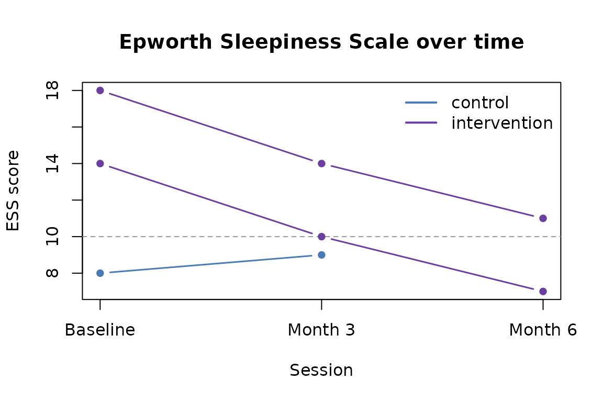

Many sleep and circadian studies collect questionnaire data at multiple time points: a baseline, a post-intervention follow-up, perhaps several sessions in between. This vignette covers how to work with repeated administrations in tallieR — retaining full history, monitoring completion, and preparing data for change-over-time analysis.
Simulated longitudinal dataset
The bundled example export only has one session per participant. For this vignette we build a small simulated study with three time points to illustrate the key functions.
library(tallieR)
# Helper: make one result entry
.make_result <- function(qid, completed_at, score, answers) {
list(questionnaire_id = qid, completed_at = completed_at,
score = score, answers = answers)
}
# Three participants x three sessions (ESS + ISI); P003 misses month-3
study <- structure(
list(
files = "simulated",
n_participants = 3L,
participants = list(
list(
meta = list(participant_id = "p1", code = "P001", name = "Alice",
age = "28", sex = "female", group = "intervention",
session = "baseline", site = "Newcastle",
bmi = "", diagnosis = "", medication = "",
referral = "", notes = "",
created_at = "2026-01-10T09:00:00.000Z"),
results = list(
.make_result("ess", "2026-01-10T09:00:00.000Z", 14,
list(ess1=2,ess2=2,ess3=1,ess4=3,ess5=2,ess6=1,ess7=2,ess8=1)),
.make_result("isi", "2026-01-10T09:10:00.000Z", 16,
list(isi1=3,isi2=2,isi3=2,isi4=3,isi5=2,isi6=2,isi7=2)),
.make_result("ess", "2026-04-10T09:00:00.000Z", 10,
list(ess1=1,ess2=1,ess3=1,ess4=2,ess5=2,ess6=1,ess7=1,ess8=1)),
.make_result("isi", "2026-04-10T09:10:00.000Z", 10,
list(isi1=2,isi2=1,isi3=1,isi4=2,isi5=2,isi6=1,isi7=1)),
.make_result("ess", "2026-07-10T09:00:00.000Z", 7,
list(ess1=1,ess2=1,ess3=0,ess4=1,ess5=1,ess6=1,ess7=1,ess8=1)),
.make_result("isi", "2026-07-10T09:10:00.000Z", 6,
list(isi1=1,isi2=1,isi3=0,isi4=1,isi5=1,isi6=1,isi7=1))
)
),
list(
meta = list(participant_id = "p2", code = "P002", name = "Bob",
age = "45", sex = "male", group = "intervention",
session = "baseline", site = "Newcastle",
bmi = "", diagnosis = "insomnia", medication = "",
referral = "", notes = "",
created_at = "2026-01-11T10:00:00.000Z"),
results = list(
.make_result("ess", "2026-01-11T10:00:00.000Z", 18,
list(ess1=3,ess2=2,ess3=2,ess4=3,ess5=2,ess6=2,ess7=2,ess8=2)),
.make_result("isi", "2026-01-11T10:10:00.000Z", 20,
list(isi1=3,isi2=3,isi3=2,isi4=4,isi5=3,isi6=2,isi7=3)),
.make_result("ess", "2026-04-11T10:00:00.000Z", 14,
list(ess1=2,ess2=2,ess3=1,ess4=2,ess5=2,ess6=1,ess7=2,ess8=2)),
.make_result("isi", "2026-04-11T10:10:00.000Z", 14,
list(isi1=2,isi2=2,isi3=2,isi4=3,isi5=2,isi6=1,isi7=2)),
.make_result("ess", "2026-07-11T10:00:00.000Z", 11,
list(ess1=1,ess2=2,ess3=1,ess4=2,ess5=2,ess6=1,ess7=1,ess8=1)),
.make_result("isi", "2026-07-11T10:10:00.000Z", 9,
list(isi1=1,isi2=2,isi3=1,isi4=2,isi5=1,isi6=1,isi7=1))
)
),
list(
meta = list(participant_id = "p3", code = "P003", name = "Carol",
age = "34", sex = "female", group = "control",
session = "baseline", site = "Newcastle",
bmi = "", diagnosis = "", medication = "",
referral = "", notes = "",
created_at = "2026-01-12T11:00:00.000Z"),
results = list(
.make_result("ess", "2026-01-12T11:00:00.000Z", 8,
list(ess1=1,ess2=1,ess3=1,ess4=1,ess5=1,ess6=1,ess7=1,ess8=1)),
.make_result("isi", "2026-01-12T11:10:00.000Z", 7,
list(isi1=1,isi2=1,isi3=1,isi4=1,isi5=1,isi6=1,isi7=1)),
# P003 missed the month-3 session
.make_result("ess", "2026-07-12T11:00:00.000Z", 9,
list(ess1=1,ess2=1,ess3=1,ess4=2,ess5=1,ess6=1,ess7=1,ess8=1)),
.make_result("isi", "2026-07-12T11:10:00.000Z", 8,
list(isi1=1,isi2=1,isi3=1,isi4=2,isi5=1,isi6=1,isi7=1))
)
)
)
),
class = "tallier_study"
)
scores_wide() vs scores_long()
scores_wide() keeps only the most
recent administration per participant per questionnaire — one
row per participant. This is appropriate for cross-sectional analysis or
when you only need a single summary score.
wide <- scores_wide(study)
wide[, c("code", "group", "ess", "isi")]
#> code group ess isi
#> 1 P001 intervention 7 6
#> 2 P002 intervention 11 9
#> 3 P003 control 9 8scores_long() retains all
administrations — one row per participant x questionnaire x
session. This is what you need for longitudinal analysis.
long <- scores_long(study)
long[, c("code", "group", "questionnaire_id", "completed_at", "score")]
#> code group questionnaire_id completed_at score
#> 1 P001 intervention ess 2026-01-10T09:00:00.000Z 14
#> 2 P001 intervention isi 2026-01-10T09:10:00.000Z 16
#> 3 P001 intervention ess 2026-04-10T09:00:00.000Z 10
#> 4 P001 intervention isi 2026-04-10T09:10:00.000Z 10
#> 5 P001 intervention ess 2026-07-10T09:00:00.000Z 7
#> 6 P001 intervention isi 2026-07-10T09:10:00.000Z 6
#> 7 P002 intervention ess 2026-01-11T10:00:00.000Z 18
#> 8 P002 intervention isi 2026-01-11T10:10:00.000Z 20
#> 9 P002 intervention ess 2026-04-11T10:00:00.000Z 14
#> 10 P002 intervention isi 2026-04-11T10:10:00.000Z 14
#> 11 P002 intervention ess 2026-07-11T10:00:00.000Z 11
#> 12 P002 intervention isi 2026-07-11T10:10:00.000Z 9
#> 13 P003 control ess 2026-01-12T11:00:00.000Z 8
#> 14 P003 control isi 2026-01-12T11:10:00.000Z 7
#> 15 P003 control ess 2026-07-12T11:00:00.000Z 9
#> 16 P003 control isi 2026-07-12T11:10:00.000Z 8Monitoring completion across time points
completion_summary() shows which participants have data
for which questionnaires:
completion_summary(study)[, c("code", "questionnaire_id", "completed", "completed_at")]
#> code questionnaire_id completed completed_at
#> 1 P001 ess TRUE 2026-07-10T09:00:00.000Z
#> 2 P001 isi TRUE 2026-07-10T09:10:00.000Z
#> 3 P002 ess TRUE 2026-07-11T10:00:00.000Z
#> 4 P002 isi TRUE 2026-07-11T10:10:00.000Z
#> 5 P003 ess TRUE 2026-07-12T11:00:00.000Z
#> 6 P003 isi TRUE 2026-07-12T11:10:00.000ZThe wide format gives a cleaner at-a-glance matrix:
completion_summary(study, wide = TRUE)[, c("code", "group", "ess", "isi")]
#> code group ess isi
#> 1 P001 intervention TRUE TRUE
#> 2 P002 intervention TRUE TRUE
#> 3 P003 control TRUE TRUEP003 missed the month-3 session but has baseline and month-6 data.
completion_summary() reports whether each questionnaire has
any completed administration — for session-level monitoring,
filter scores_long() by timestamp.
Preparing a panel data frame
For longitudinal modelling you typically want a session number alongside each score. Derive it from the timestamp by numbering administrations in chronological order:
long <- scores_long(study)
# Number administrations per participant x questionnaire
long <- long[order(long$participant_id, long$questionnaire_id, long$completed_at), ]
long$session_n <- ave(
seq_len(nrow(long)),
paste(long$participant_id, long$questionnaire_id),
FUN = seq_along
)
head(long[, c("code", "group", "questionnaire_id", "session_n",
"completed_at", "score")])
#> code group questionnaire_id session_n completed_at score
#> 1 P001 intervention ess 1 2026-01-10T09:00:00.000Z 14
#> 3 P001 intervention ess 2 2026-04-10T09:00:00.000Z 10
#> 5 P001 intervention ess 3 2026-07-10T09:00:00.000Z 7
#> 2 P001 intervention isi 1 2026-01-10T09:10:00.000Z 16
#> 4 P001 intervention isi 2 2026-04-10T09:10:00.000Z 10
#> 6 P001 intervention isi 3 2026-07-10T09:10:00.000Z 6Pivot to wide-by-session for repeated-measures ANOVA or mixed models:
ess_long <- long[long$questionnaire_id == "ess", ]
ess_long$score <- as.numeric(ess_long$score)
ess_wide <- tidyr::pivot_wider(
ess_long[, c("code", "group", "session_n", "score")],
names_from = "session_n",
values_from = "score",
names_prefix = "ess_t"
)
ess_wide
#> # A tibble: 3 × 5
#> code group ess_t1 ess_t2 ess_t3
#> <chr> <chr> <dbl> <dbl> <dbl>
#> 1 P001 intervention 14 10 7
#> 2 P002 intervention 18 14 11
#> 3 P003 control 8 9 NAPlotting change over time
With scores_long() and a session number, plotting
individual trajectories is straightforward:
long$score <- as.numeric(long$score)
long$session_n <- as.integer(long$session_n)
ess <- long[long$questionnaire_id == "ess", ]
palette <- c(control = "#4A7BB5", intervention = "#6B3FA0")
plot(
range(ess$session_n), range(ess$score, na.rm = TRUE),
type = "n", xlab = "Session", ylab = "ESS score",
main = "Epworth Sleepiness Scale over time",
xaxt = "n"
)
axis(1, at = 1:3, labels = c("Baseline", "Month 3", "Month 6"))
abline(h = 10, lty = 2, col = "grey60") # ESS clinical threshold
for (pid in unique(ess$participant_id)) {
p <- ess[ess$participant_id == pid, ]
grp <- p$group[1]
lines(p$session_n, p$score,
col = palette[grp], lwd = 1.5, type = "b", pch = 16)
}
legend("topright", legend = names(palette),
col = palette, lwd = 2, bty = "n")
Adding clinical interpretations
Join interpret_all() to scores_long() to
add a label column alongside each score:
interps <- interpret_all(study)
interps$score <- as.numeric(interps$score)
result <- merge(
long[, c("participant_id", "code", "group", "questionnaire_id",
"session_n", "completed_at", "score")],
interps[, c("participant_id", "questionnaire_id", "completed_at",
"label", "color")],
by = c("participant_id", "questionnaire_id", "completed_at"),
all.x = TRUE
)
result[result$questionnaire_id == "ess",
c("code", "group", "session_n", "score", "label")]
#> code group session_n score label
#> 1 P001 intervention 1 14 Excessive
#> 2 P001 intervention 2 10 Excessive
#> 3 P001 intervention 3 7 Normal
#> 7 P002 intervention 1 18 Severe
#> 8 P002 intervention 2 14 Excessive
#> 9 P002 intervention 3 11 Excessive
#> 13 P003 control 1 8 Borderline
#> 14 P003 control 2 9 Borderline